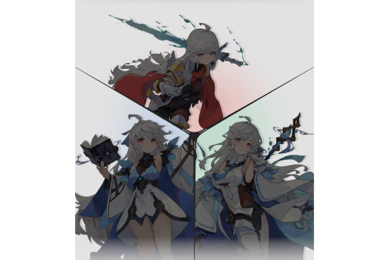
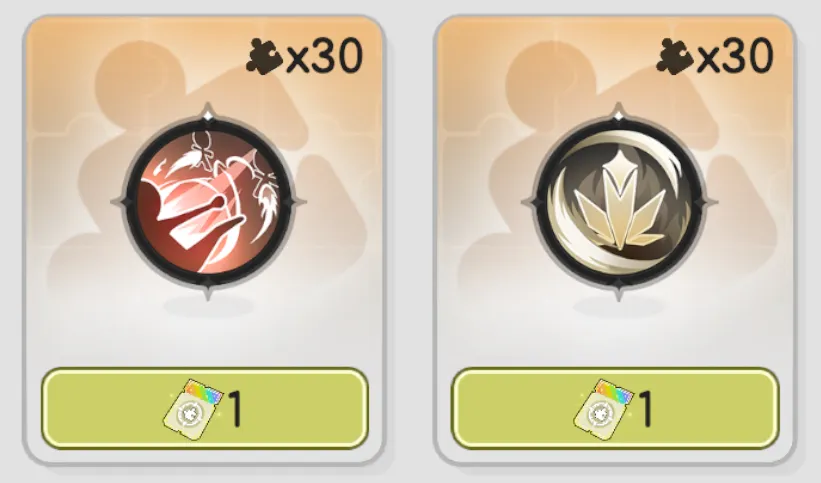

1. Tân Thủ, Căn Cứ & 17 Code2. Công Thức & Skill Ascend3. Chọn Nghề & Đổi Lớp Lv.1004. Hồ Sơ Kiếm Công (48 Skill)5. Hồ Sơ Khiên Thủ (Hiệp Sĩ)6. Hồ Sơ Trượng Công (48 Skill)7. Hồ Sơ Hiền Giả & Bí Thuật8. Bộ Build Meta 4 Chế Độ9. Trang Bị, Đá Thần Tạo & Ngọc10. Cổ Vật & 12 Huyễn Thú11. Tiểu Sử 13 NPC, Collab & Món12. Hệ Thống Mùa, Bingo & Reset13. Xâm Lăng Hỗn Mang (Full)14. Bản Đồ Kanstein & Co-op
1. Hành Trình Thức Tỉnh Qua 4 Tầng Định Mệnh & Sư Phụ Mei (Lv.106)
- Khởi Nguyên Bậc 1 (Lv.1): Chiến Binh (Warrior) thuần Sát Thương Vật Lý ổn định (không bị kháng cũng không khắc hệ, giáp dày nhưng tầm ngắn) đối lập với Pháp Sư (Mage) làm chủ Gió–Nước–Lửa đa biến (cần lưu nhiều bộ Loadout để tránh quái kháng/miễn nhiễm nguyên tố).
- Phân Nhánh Bậc 2 (Lv.44 • Cinder Ridge) & Tinh Thông Bậc 3 (Lv.82 • Aqualis): Tách thành 4 trụ cột bất biến suốt game (tới Bậc 8 có hơn 30 tên gọi khác nhau nên người chơi kỳ cựu thường gọi tắt là Đấu Sĩ / Hiệp Sĩ / Thuật Sư / Hiền Giả lần thứ X): Đấu Sĩ → Cuồng Chiến, Hiệp Sĩ → Thánh Hiệp Sĩ ("Vùng Cấm Bay"), Thuật Sư → Đại Pháp Sư, Hiền Giả → Bí Thuật Sư.
- Huyền Thoại Bậc 4 (Lv.106 • Unrakumotogo tại Long Cảng): Người thầy Mei dẫn dắt bước thăng hoa xóa nhòa ranh giới:
• Conqueror (Chinh Phục Giả — từ Berserker): Kết hợp kiếm thuật với Elemental Mastery theo hướng Combo Vật Lý hoặc Lai Nguyên Tố.
• Guardian (Thủ Hộ Giả — từ Paladin): Biến phòng thủ thành tấn công với Aqua Dance Blade (Water Knight) và Luminous Sword Array (Light Knight).
• Destroyer (Hủy Diệt Giả — từ Archmage): Đỉnh cao AoE Ánh Sáng & Lửa qua Thunder of Judgment, Secret Fire Core Explosion & Formation Breaker.
• Dominator (Thống Trị Giả — từ Arcanist): Ba con đường rõ rệt gồm Shadow Priest (Dark Star Burst), Pure Healer (Rain of Revival + Phantom Light) và Summoner (Stone Emperor).
2. Phân Biệt Rạch Ròi: Phong Cách (Style) vs Lối Build vs Cơ Chế (Mechanic)
- Phong Cách (Style — Thuộc tính Đồ & Cổ Vật, tốn nhiều tháng để đổi): Là hướng nuôi chỉ số nền (VD: Crit Duelist/Sorcerer, Block Knight, Healer Sage hoặc phong cách hiếm như Heal Knight, Crit Knight, Accuracy Duelist, Shadow Priest). Vì đổi Style cực lâu nên đừng đổi nghề chạy theo trào lưu ngắn hạn!
- Lối Build (Build — Bộ kỹ năng & Nguyên tố chủ đạo):
• Đấu Sĩ (2 build):Multi-Strike(đánh nhiều hit kích Bùa) &Spellblade(trực diện Chiến Kỹ).
• Hiệp Sĩ (3 build):Block Knight(trụ giao tranh dài),Water Knight(AoE Nước) &Light Knight(Ánh Sáng).
• Thuật Sư (5 build):Light(combo đơn mục tiêu),Fire(Crit + AoE rộng),Wind(đẩy lùi cắt nhịp cận chiến),Water(đóng băng nhiều lượt) &4-Element Hybrid.
• Hiền Giả (3 build + 1 style):Erosion(cộng dồn Ăn Mòn nổ bùng),Direct Damage&Summoner(ít khuyến nghị về cuối); riêng Healer là một Style! - Cơ Chế (Mechanic — Thay đổi linh hoạt trong từng trận): Cách vận hành cụ thể trong Loadout như
Shield (Khiên),Taunt (Khiêu Khích),Fridge (Đóng Băng)hayLifesteal (Hút Máu). - Biên Độ Dao Động Sát Thương Thực Chiến: Đấu Sĩ (Crit cao, Accuracy thấp →
50% ~ 300%); Hiệp Sĩ (Block cao →50% ~ 200%); Thuật Sư (Accuracy lớp cao hiếm bị Block → ổn định nhất100% ~ 250%); Hiền Giả (chỉ số gốc cao50% ~ 200%, không có giảm ST bẩm sinh nên tránh cộng dồn Block).
3. Toàn Tập Chuyển Lớp Không Mất Mát (Lossless Class Change — Cấp 100 Aqualis)
Đọc Kỹ Trước Khi Bấm Đổi!- Cảnh Báo Tuyệt Đối — ĐỪNG Đổi Lớp Trước Cấp 100: Nếu đổi ở Verdantglade hay Cinder Ridge trước khi mở Chuyển Lớp lần 3 tại Aqualis (Lv.100), toàn bộ kỹ năng lớp cũ sẽ bị khóa và bạn chỉ còn 2 chiêu mặc định! Hãy chờ tới Lv.100 Aqualis: từ mốc đó về sau mọi kỹ năng đều được chuyển đổi bảo toàn.
- Chi Phí Bia Đổi Lớp (Slate) & Vũ Khí: Mỗi tuần hệ thống tặng 1 Slate miễn phí (không cộng dồn nếu không xài; đổi lần 2 trong cùng tuần mới tốn Dawnium). Vũ khí lớp cũ được cất nguyên vẹn vào túi đồ và hệ thống phát 1 vũ khí phẩm Lam cho lớp mới.
- Luật Ánh Xạ Kỹ Năng Ngang Bậc: Tính theo độ hiếm cơ bản (base rarity) và bậc lớp — Chiến Kỹ (Technique) chỉ ra Chiến Kỹ, Bí Thuật (Charm) chỉ ra Bí Thuật, không nhảy chéo loại!
- Ví Dụ Bẫy Thực Tế (Berserker → Paladin): Bậc 3 có 4 kỹ năng Cam (2 Chiến Kỹ + 2 Bí Thuật). Một trong hai Bí Thuật Cam của Cuồng Chiến là lõi sát thương hạng nặng, nhưng khi đổi sang Thánh Hiệp Sĩ sẽ bị ánh xạ thành 2 Bí Thuật Cam thiên thủ ít giá trị của Paladin!
- Cơ Chế Bảo Hiểm 3 Kết Quả & 8 Giờ Hoàn Tác: Hệ thống luôn tung ra 3 phương án quy đổi khác nhau để bạn chọn bộ đẹp nhất (thậm chí giúp người từng quay xui "sửa sai" bộ chiêu!). Sau khi đổi, bạn có đúng 8 giờ để bấm Hoàn Tác miễn phí về nguyên trạng ban đầu; quá 8 giờ lớp mới sẽ khóa cứng (muốn quay lại phải tốn thêm 1 Slate).
- Ứng Dụng Chiến Thuật & Class Rollback: Rất hữu hiệu khi đi Đấu Thử Thách 4v4 hoặc phụ bản thiếu Tank/Heal. Ngoài ra còn có tùy chọn Hoàn Lớp Về Ban Đầu (No Conversion) nếu không muốn đổi bộ mảnh kỹ năng gốc.

